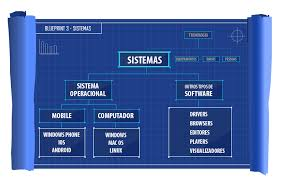
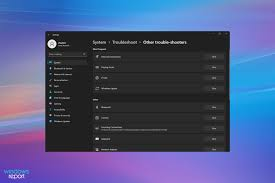

O que é um software?
Um software é um conjunto de instruções e programas que indicam a um computador ou outro dispositivo como realizar tarefas específicas, sendo a parte não física (lógica) de um sistema, em contraste com o hardware (a parte física).
O que é um sistema operacional?

Um sistema operacional (SO) é um software essencial que atua como um intermediário entre o hardware (componentes físicos do dispositivo) e os programas que você usa. Ele gerencia os recursos do computador, como processador, memória e dispositivos de entrada/saída, e fornece uma interface para que você possa interagir com o dispositivo e executar tarefas, como abrir aplicativos e navegar na internet. Sem o SO, seu computador ou celular seria inútil.
O que é uma licença de software?
Uma licença de software é um contrato legal entre o criador do software e o utilizador, que define as condições e permissões para usar, copiar, modificar e distribuir um programa. Esse contrato protege a propriedade intelectual do desenvolvedor e estabelece os limites de uso para o usuário, tornando o uso do software não licenciado ilegal e sujeito a penalidades.
O que é um Software livre?

Um software livre é um programa que respeita a liberdade do utilizador, conferindo-lhe quatro liberdades essenciais: a de executar o programa para qualquer fim, a de estudar como ele funciona e modificá-lo (o que requer acesso ao código-fonte), a de redistribuir cópias para ajudar outras pessoas, e a de melhorar o programa e partilhar essas melhorias com a comunidade.
O que é um Software Proprietário?
Um software proprietário é um programa que pertence a uma empresa ou indivíduo que detém os direitos exclusivos sobre o seu código-fonte e distribuição, restringindo o uso, a modificação e o compartilhamento pelo usuário final, que geralmente precisa pagar uma licença para utilizá-lo.
O que é um software de Sistema?

Um software de sistema é um conjunto de programas informáticos que gere o hardware de um computador, permitindo o funcionamento de outros programas e a interação entre o utilizador e os componentes físicos do dispositivo.
O que é um software Aplicativo?
Um software aplicativo, ou simplesmente aplicativo/app, é um programa de computador projetado para executar tarefas específicas para o usuário final.
O que é um software de Programação?

Software de programação é um conjunto de ferramentas e programas que os desenvolvedores usam para criar outros softwares, como aplicativos, sistemas e websites. Ele inclui editores de código, compiladores (tradutores de linguagem) e ambientes integrados de desenvolvimento (IDEs) que facilitam a escrita, teste e depuração de código em diversas linguagens de programação, como Python, Java e C++.
O que é um software de diagnóstico de software ?

Um software de diagnóstico é um programa projetado para identificar, analisar e reportar problemas em sistemas (hardware, software, ou ambos), o estado operacional de um dispositivo, ou até mesmo analisar dados para fazer uma conclusão, como no caso de um diagnóstico de saúde ou automotivo.
O que é um software de diagnóstico de hardware ?
Um software de diagnóstico de hardware é uma ferramenta que testa e analisa os componentes físicos de um computador para identificar e solucionar problemas, monitorar o desempenho e verificar a funcionalidade.